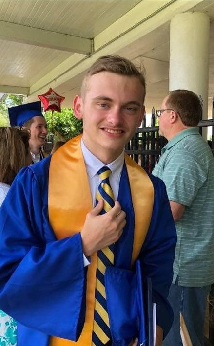
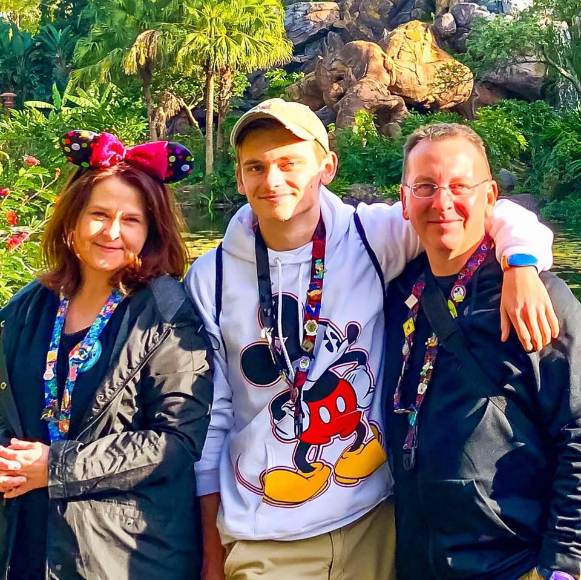
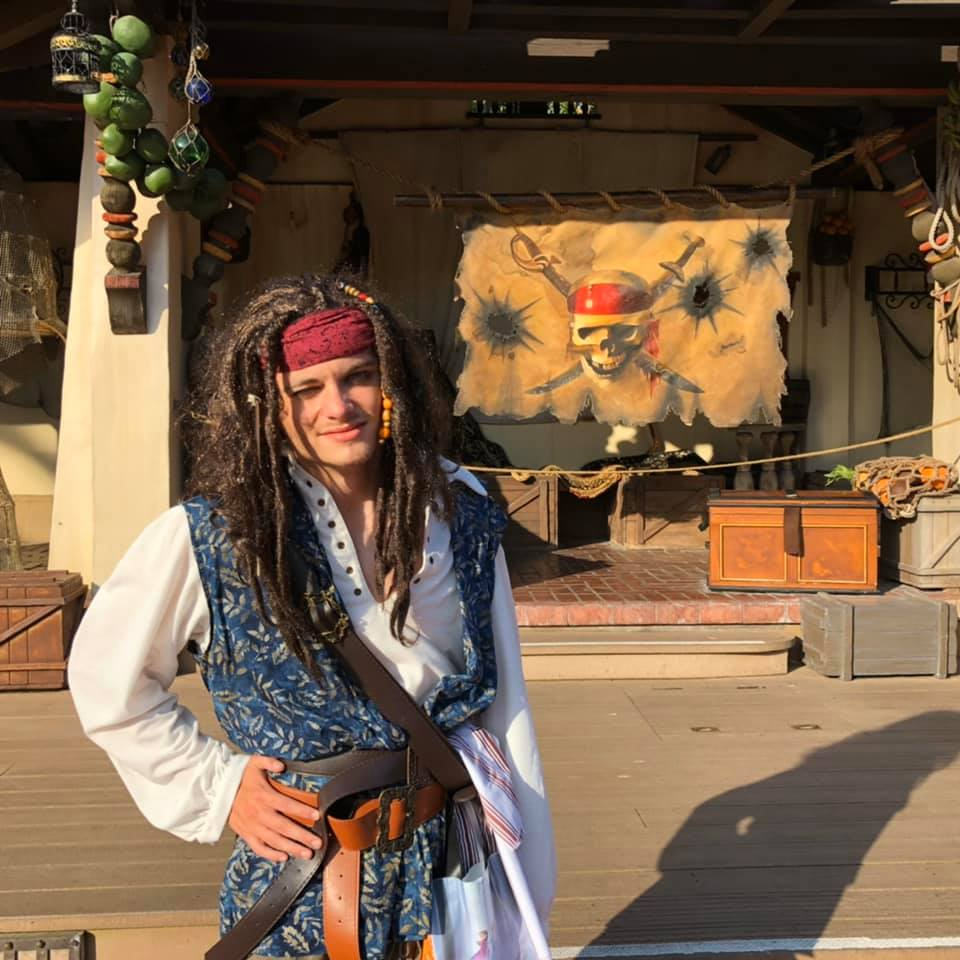

|
Brandon Parker attended Highschool at Highland School of Technology from 2014-2018. He graduated from the computer engineering pathway. Afterward, he enrolled in computer science at the University of North Carolina Charlotte. He is currently in his second year at UNCC and plans to get into cybersecurity as soon as he graduates in 2022. |
 |
|  | After God, Brandon's biggest love is his family. He always makes sure to spend tons of time with them whenever he can. Brandon and his family share a hobby of going around to different amusement parks all over the United States and reviewing their time there on YouTube. |
Brandon's favorite pass time is to partake in cosplay. He self-taught himself how to use 3D printing software and how to sew. He loves to go around to different events with his family and meet all kinds of different and new people. |
 |